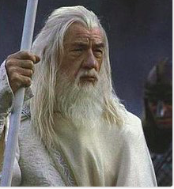
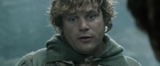
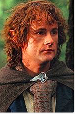
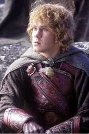
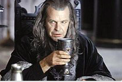

- Frodo

- Gandalf

- Legolas

- Samwise Gamgee

- Aragorn

- Peregrin Took (Pippin)

- Merriadoc Brandybuck (Merry)

- Gimli

- Faramir

- Boromir (little bit wierd in my opinion) The second picture is funny.


- Theoden

- Eomer

- And no I don't like Denethor. He is nuts. Burning his son?! Child Abuse bro!

- Eowyn (good fighter, but terrible cook not a suitable wife for Faramir) (No picture)
- Treebeard, I like when he says, "Whose side am I on? I am on no one's side because no one is altogether on my side."